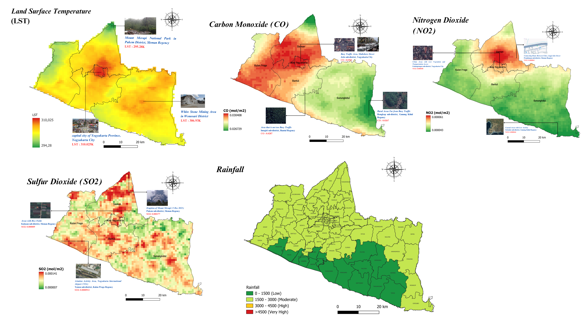
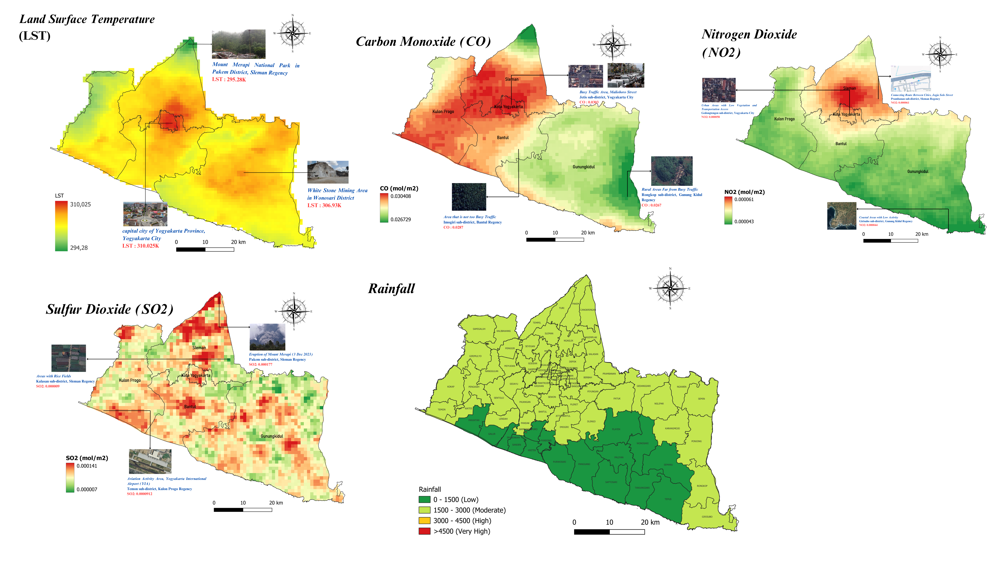

Berdasarkan Penelitian oleh Innas Khoirun Chisan dengan Bimbingan Arie Wahyu Wijayanto
Tuberculosis (TB) merupakan penyakit menular yang disebabkan oleh bakteri Mycobacterium tuberculosis, telah menjadi masalah kesehatan global yang serius. Pada tahun 2023, TB melampaui Covid-19 sebagai penyakit infeksi penyebab kematian tertinggi di dunia. Situasi ini melatarbelakangi pentingnya pengendalian TB sebagai salah satu target utama dalam Sustainable Development Goals (SDGs), yang bertujuan mengakhiri epidemi TB dan penyakit menular lainnya untuk menjamin kehidupan yang sehat dan sejahtera (WHO, 2024).
Menurut Global Tuberculosis Report 2024 dari WHO, Indonesia menempati urutan kedua sebagai negara dengan beban kasus TB terbanyak di dunia setelah India. Tingginya angka kasus ini menjadikan penanggulangan TB sebagai prioritas dalam Rencana Pembangunan Jangka Menengah Nasional (RPJMN) 2025-2029.
Pada tahun 2024, DIY menjadi satu-satunya provinsi di Pulau Jawa yang belum mencapai target cakupan dan keberhasilan pengobatan.
Kerentanan terhadap suatu penyakit adalah kondisi dinamis yang dipengaruhi oleh faktor pribadi dan lingkungan. WHO mendefinisikan kerentanan sebagai risiko yang timbul dari ketidaksetaraan sosial, ekonomi, dan politik. Dalam konteks TB, kerentanan tidak hanya disebabkan oleh faktor epidemiologi, tetapi juga sangat dipengaruhi oleh faktor lingkungan fisik, kondisi sosial, dan status ekonomi masyarakat.
Saat ini, data kejadian TB di Indonesia dikumpulkan melalui Sistem Informasi Tuberculosis (SITB), yang menyajikan data tahunan hingga tingkat kecamatan. Mekanisme tersebut memiliki keterbatasan seperti proses pembaruan yang lambat dan cakupan data yang kurang granular.
Kemajuan teknologi remote sensing dan big data geospasial menawarkan peluang untuk mengatasi keterbatasan ini. Penelitian ini secara spesifik memanfaatkan berbagai sumber data untuk memungkinkan analisis faktor lingkungan yang lebih detail dan komprehensif. Sumber data tersebut meliputi:
Penelitian ini mengadopsi dua pendekatan utama. Pertama, Multi-Criteria Decision Analysis (MCDA) yang mampu menggabungkan berbagai kriteria dan mudah diinterpretasikan. Kedua, Machine Learning yang unggul dalam mengidentifikasi pola kompleks dan hubungan non-linier dalam data. Dengan menggabungkan keduanya, penelitian ini bertujuan menciptakan model kerentanan TB yang tidak hanya akurat secara prediktif tetapi juga mudah ditafsirkan.
Integrasi big data geospasial dan statistik resmi serta pemodelan menggunakan MCDA dan Machine Learning dapat digunakan untuk mengidentifikasi kerentanan tuberculosis pada level yang lebih detail.
Penelitian ini menggunakan data yang berasal dari berbagai sumber termasuk citra satelit, Point of Interest (POI), dan data statistik resmi. Data yang digunakan dalam penelitian ini dipilih berdasarkan relevansinya dengan teori dan temuan penelitian sebelumnya yang menunjukkan hubungan signifikan terhadap kerentanan tuberculosis. Data penelitian dikelompokkan ke dalam 3 komponen kerentanan yaitu Komponen Lingkungan Fisik, Komponen Sosial, dan Komponen Ekonomi.
 

Penelitian ini bertujuan untuk memodelkan kerentanan tuberculosis hingga tingkat granular di Provinsi Daerah Istimewa Yogyakarta (DIY). Secara garis besar proses memperoleh hasil penelitian digambarkan pada kerangka berikut:
Dalam penelitian ini dilakukan dua pendekatan yaitu pendekatan Multi-Criteria Decision Analysis (MCDA) untuk pembangunan Relative Spatial Tuberculosis Vulnerability Index (RSTVI) dan pendekatan Machine Learning untuk mengestimasi nilai prevalensi tuberculosis.
Pembangunan RSTVI dilakukan melalui dua tahap perhitungan yaitu perhitungan bobot setiap komponen pada tahap pertama dan dilanjutkan perhitungan RSTVI total pada tahap kedua. Arsitektur hierarki pembuatan RSTVI adalah sebagai berikut:

Hasil evaluasi deskriptif maupun numerik menunjukkan bahwa metode pembobotan PCA merupakan metode terbaik dalam pembangunan RSTVI. Sementara pembangunan model estimasi prevalensi tuberculosis menunjukkan bahwa metode Gaussian Process Regression (GPR) menunjukkan performa terbaik. Hasil pemetaan RSTVI dan estimasi prevalensi tuberculosis disajikan dalam sebuah dashboard interactive
Halaman ini juga menyediakan layanan estimasi prevalensi tuberculosis menggunakan model machine learning yang sebelumnya telah dilatih. Pengguna dapat memperoleh hasil estimasi dan pemetaannya dengan memasukkan data.